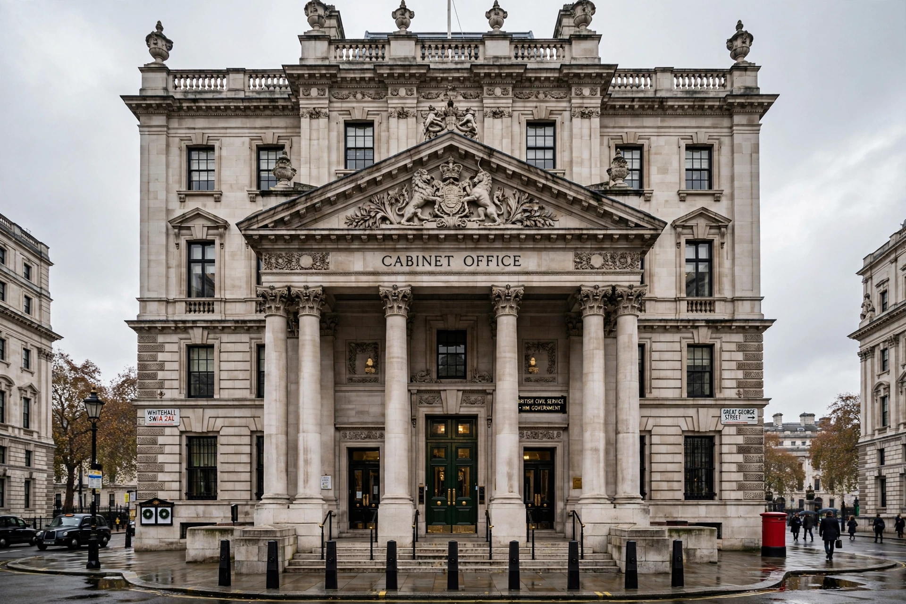

His Majesty's Most Honourable Privy Council is a formal body of advisers to the sovereign of the United Kingdom. Its members, known as privy counsellors, are mainly senior politicians who are current or former members of either the House of Commons or the House of Lords, together with senior judges, members of the royal family, and other dignitaries.

The Privy Council formally advises the sovereign on the exercise of the royal prerogative, and issues executive instruments known as Orders in Council. In practice, the Council's decisions are made by the government of the day: meetings are attended only by the ministers responsible for the matters under discussion, and the quorum is three. The sovereign presides while standing, by tradition, so that meetings are kept brief.
Privy counsellors are appointed for life by the sovereign on the advice of the prime minister, and are styled "The Right Honourable". Membership confers duties as well as privileges: counsellors swear an oath to keep secret matters committed to them, and are consulted on proclamations, royal charters, and certain appointments.
The Judicial Committee of the Privy Council, established in 1833, is the court of final appeal for many Commonwealth countries, Crown Dependencies, and British Overseas Territories, and for certain domestic cases. Its members are mainly the justices of the UK Supreme Court.
The Privy Council developed from the curia regis of the Norman and Plantagenet kings. During the reign of the Tudors it became the principal organ of executive government, before its power declined in favour of the Cabinet after the Glorious Revolution of 1688. Accession Councils, a special form of the Privy Council, proclaim a new sovereign on the death of the previous monarch.